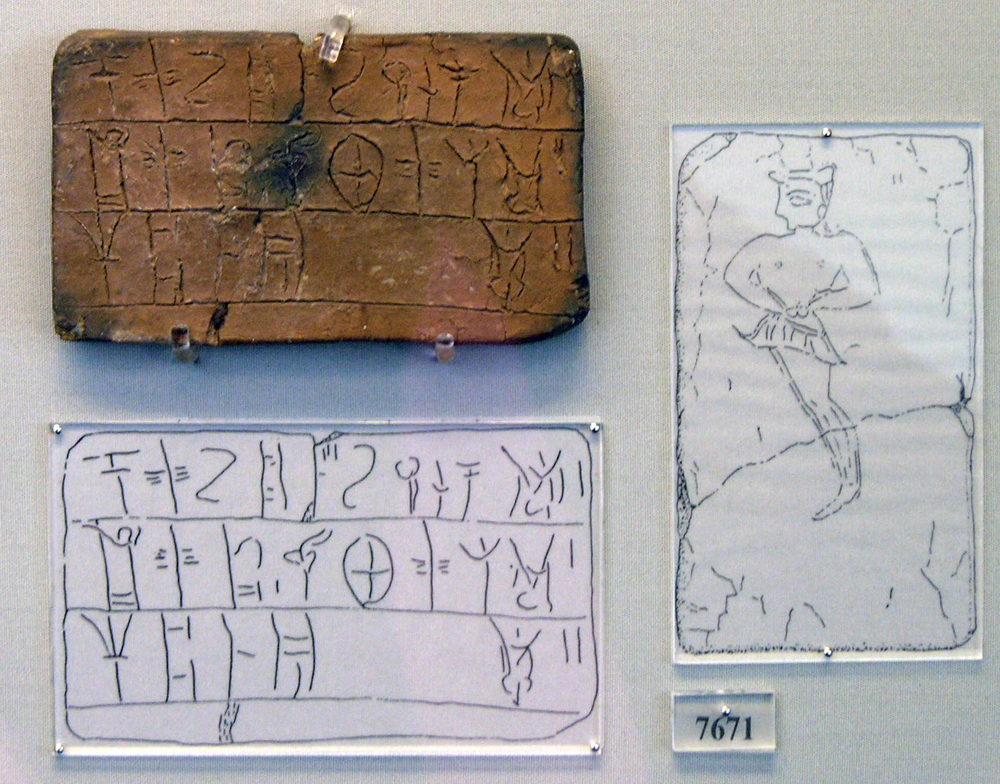
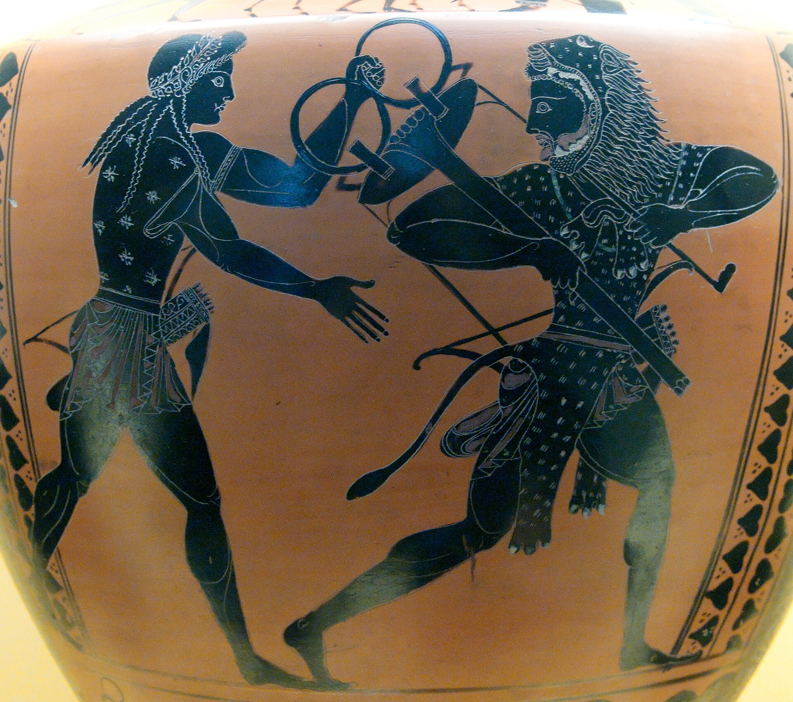
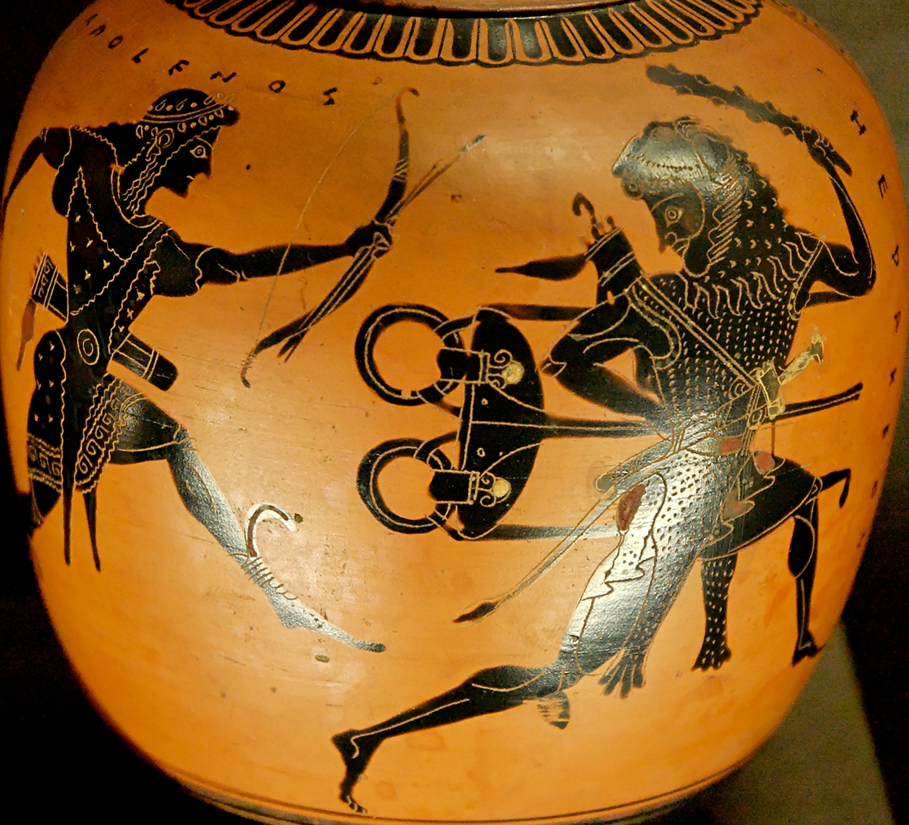
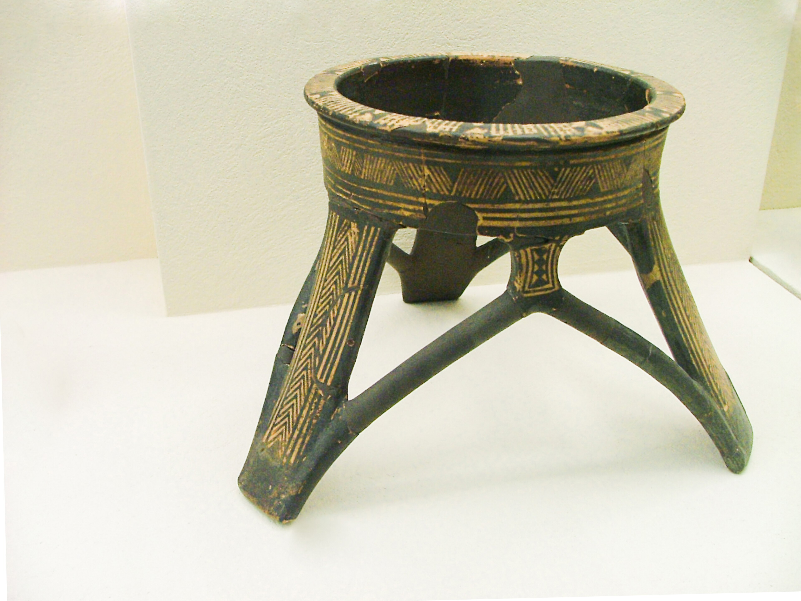
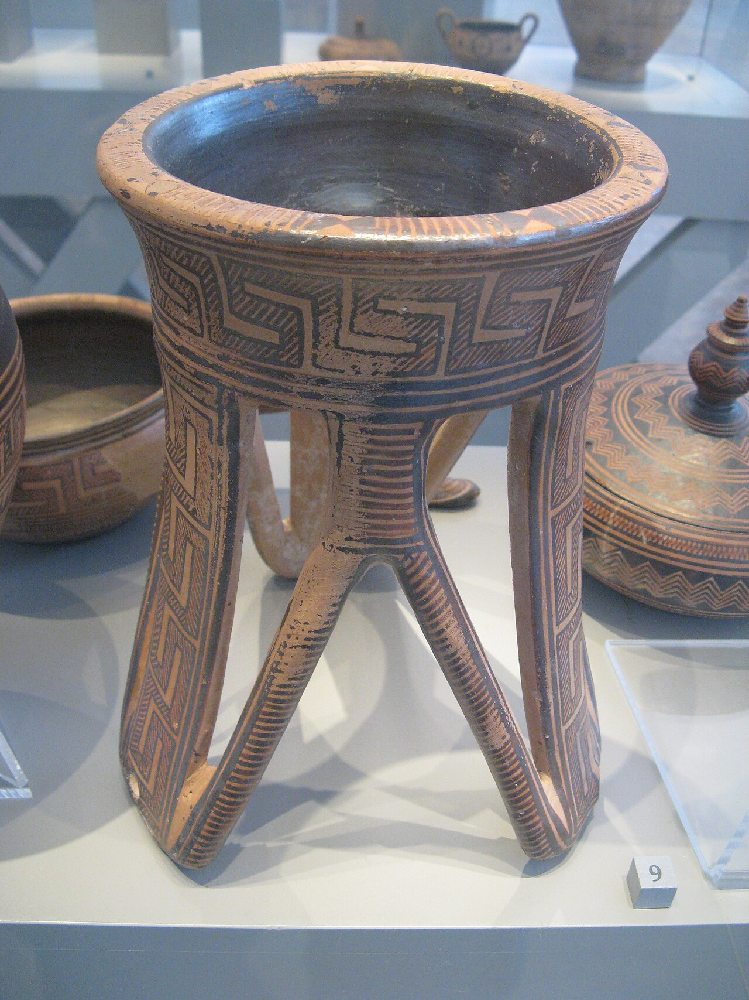
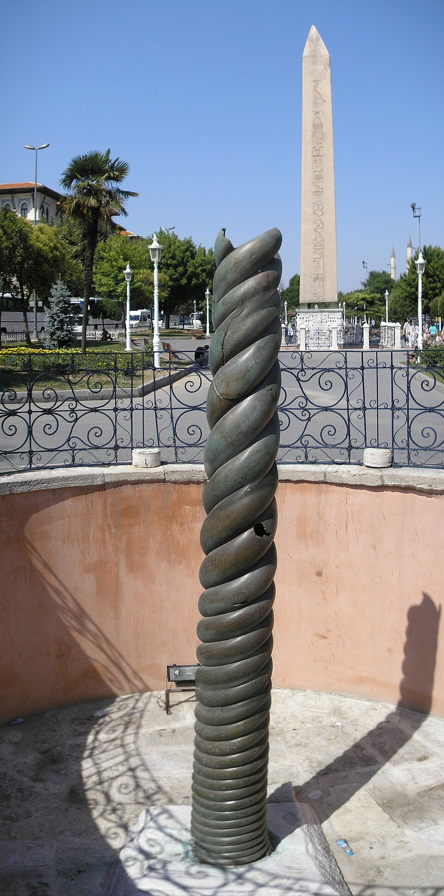
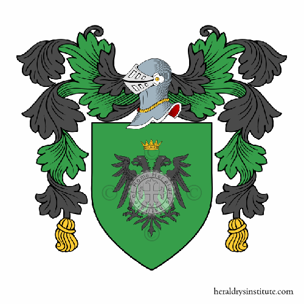
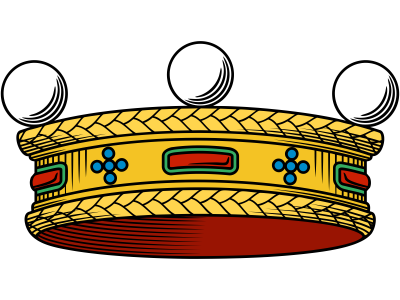
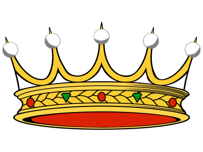

Investigación genealógica, heráldica e histórica
Τρίποδι · Trípodis · Tripodu
Un apellido grabado en tablillas micénicas, que sentó a la Pitia sobre el humo de los dioses y que cruzó el Mediterráneo para arraigarse en el sur de Italia hace más de 2.700 años.

Etimología
El apellido Tripodi es un fósil lingüístico helénico casi intacto. Dos morfemas griegos que han sobrevivido más de 25 siglos sin apenas alterarse.
Historia
Desde las tablillas micénicas hasta la diáspora en América del Sur, la historia del trípode y su apellido atraviesa tres milenios.


Tablilla micénica NAMA 7671 en Lineal B — Tablilla de contabilidad del palacio de Micenas. El silabograma ti-ri-po-de es la primera evidencia escrita de la raíz del apellido Tripodi, 3.500 años atrás.','https://es.wikipedia.org/wiki/Micenas#/media/Archivo:Linear_B_(Mycenaean_Greek)_NAMA_Tablette_7671.jpg')">



Hidria con escena délfica del trípode — Cerámica ática de figuras negras que muestra a Heracles y Apolo disputando el trípode sagrado de Delfos. Museo Arqueológico Nacional de Atenas.','https://es.wikipedia.org/wiki/Tr%C3%ADpode_%28mueble%29#/media/Archivo:Hydria_Delphic_tripod_MNA_Inv10913.jpg')">
Disputa de Heracles y Apolo por el trípode délfico — Oinochoe ático de figuras negras, c. 520 a.C. Museo del Louvre, París.','https://es.wikipedia.org/wiki/Archivo:Herakles_tripod_Louvre_F341.jpg')">
Trípode griego del período geométrico, c. 950–900 a.C. Museo Arqueológico del Cerámico, Atenas.','https://es.wikipedia.org/wiki/Tr%C3%ADpode_%28mueble%29#/media/Archivo:Ancient_Greek_tripod_-_KAMA.jpg')">
Trípode de cerámica protoática, c. 850 a.C. Antikensammlung, Berlín.','https://es.wikipedia.org/wiki/Tr%C3%ADpode_%28mueble%29#/media/Archivo:Attic_geometric_tripod_Antikensammlung_Berlin_2.jpg')">
La Columna de las Serpientes (Yilanli Sütun) — El fuste de bronce del Trípode de Platea en el antiguo Hipódromo de Constantinopla, hoy Plaza Sultán Ahmet, Estambul. Trasladado desde Delfos por Constantino en el año 324 d.C.','https://es.wikipedia.org/wiki/Columna_de_las_Serpientes#/media/Archivo:Snake_column_Hippodrome_Constantinople_2007.jpg')">


Las tres hipótesis
En la onomástica mediterránea, los apellidos suelen surgir de la ocupación, el lugar de origen, o el vínculo con lo sagrado. Tripodi tiene argumentos sólidos para cada una. Hacé clic en cada tarjeta para expandirla.
Peso relativo estimado según genealogistas mediterráneos.

El Oráculo de Delfos
Distribución geográfica
La distribución del apellido en Italia es una huella casi perfecta de la antigua Magna Grecia: concentrado en el extremo sur, diluyéndose hacia el norte.

Presencia relativa; 100% = densidad máxima en Reggio Calabria. Fuente: registros genealógicos italianos y bases onomásticas.
La diáspora
La historia del apellido Tripodi fuera de Italia refleja los grandes movimientos migratorios del siglo XIX y XX.
Heráldica
El Heraldrys Institute of Rome registra dos dossiers heráldicos distintos para el apellido Tripodi: uno vinculado a la rama siciliana noble (Notabili – Cavalieri, Dossier 882605) y otro a una rama de origen boloñés (Nobili, Dossier 881544). La dualidad refleja la expansión del linaje desde Messina hacia distintas regiones de Italia a partir del siglo XVII.

Escudo Tripodi / Tripodo — Rama Siciliana
Escudo Tripodi / Tripodo — Variante Siciliana
Escudo Tripodi — Variante BoloñesaPerfil lingüístico
Lo más notable de Tripodi es que sobrevivió sin transformarse. Mientras cientos de apellidos griegos del sur de Italia se latinizaron o deformaron, Tripodi llegó casi intacto al siglo XXI.
Variantes del apellido
Según la región y el dialecto local, el trípode adquirió distintas formas. Todas son reconocibles, todas comparten el mismo ADN helénico.
Personajes notables
A lo largo de los siglos, portadores de este apellido se destacaron en el derecho, la política, la Iglesia y el deporte, dispersos entre Sicilia, Calabria, Argentina y el mundo.
Llevar el apellido Tripodi es portar un fragmento vivo de la historia mediterránea. No es solo un nombre: es el eco de un artesano que forjó bronce en la Magna Grecia, el humo que ascendía bajo la Pitia en Delfos, la tablilla de arcilla que grabó una palabra hace 3.500 años. Es el trípode: el objeto de tres pies que no puede caer, que sostiene lo sagrado, que equilibra el peso del mundo antiguo sobre tres puntos fijos. Una metáfora perfecta de estabilidad, de herencia tripartita —griega, calabresa y de la diáspora— que sigue en pie.
Referencias y fuentes
Esta investigación genealógica, lingüística e histórica se apoyó en las siguientes fuentes académicas, enciclopédicas y documentales.